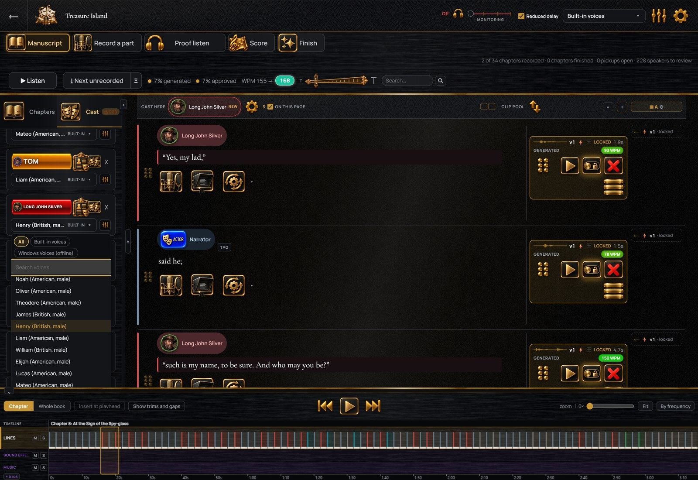

Service keys stay on your computer
The sign-in details for a service you connect are stored on your computer. Text is sent only to the services you connect, under your own account, and a paid service bills you directly.
Voices
StellAurator is a recording program first: everything in it works with your own voice and no services connected. Computer voices and voice conversion are optional. This page lists what is included, what a voice service adds, and what Audible allows.
Twenty-six voices are included, need no account or internet connection, and the voices built into Windows are available too. They read a line aloud: to hear a scene before recording it, to stand in for a part until an actor records it, or to produce a book that will not go to Audible. Nothing else requires a voice service: recording, clean-up, finishing, music, proof listening and export all work with nothing connected.
Converting your own reading into a character’s voice requires a voice conversion service: the services marked below, or one that runs on your own computer. You sign up with them and pay them directly; your usage there is separate from your StellAurator plan, and these services are never described as free or included.
Get an ElevenLabs account if you want its voices. StellAurator is an independent affiliate of ElevenLabs and is paid a commission if you subscribe after following this link. You can also go to elevenlabs.io directly.
Olivia, Emma, Ava, Amelia, Charlotte, Mia, Sophia, Evelyn, Isabella and Harper. Noah, Oliver, Theodore, James, Henry, Liam, William, Elijah, Lucas and Mateo. Luna, Jazzy, Raven, Willow, Juniper and Phoenix.

Your reading, in a character’s voice
Your voice does not have to sound like the character. Read the whole book in your own voice, every part, then use a voice conversion service to convert each line into the voice of the character who speaks it. Your timing, emphasis and pauses are kept, and the original recording is stored alongside every converted one.
The sign-in details for a service you connect are stored on your computer. Text is sent only to the services you connect, under your own account, and a paid service bills you directly.
Audible’s ACX does not accept computer-generated narration. Every exported file is labeled: a file with a computer-generated voice is marked as containing AI-generated narration, and a file with a reading you recorded and converted is marked as containing a speech-to-speech modified human performance. The export window counts the generated and converted lines before you export.
Names the voices mispronounce are entered in a pronunciation guide once, and every voice reads them correctly from then on. A human reader sees the same guide where the names occur.
AI help
An AI service can be connected: Anthropic, OpenAI, xAI, Gemini, Groq, OpenRouter, or Ollama on your own computer. It can attribute lines whose speaker is uncertain, describe your cast, brief a narrator, and suggest music cues. Every instruction sent to it can be read and edited. Without one connected, speakers are still detected automatically and uncertain lines are flagged for you.
No card required. The twenty-six built-in voices are in the trial too.